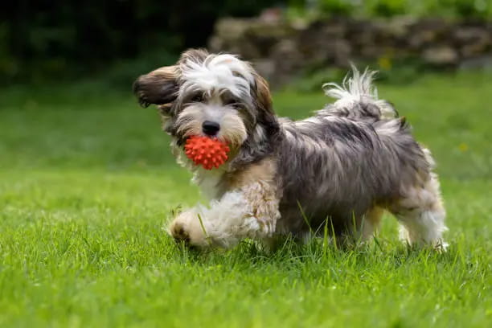

Submissive Urination in Dogs: Causes and What Helps

Submissive urination — a dog leaking urine during greetings, excitement, or mild scolding — is one of the most misunderstood dog behaviors, often mistaken for a house-training failure when it's actually an involuntary emotional response. Understanding that distinction changes the entire approach.
Why it's not a house-training issue
Unlike a lapse in house training, submissive urination isn't within the dog's conscious control in the moment — it's an automatic response tied to appeasement and mild anxiety, similar to how a person might blush involuntarily. It typically happens specifically during greetings, direct eye contact, someone leaning over the dog, a raised voice, or approaching too fast — not randomly throughout the day like a house-training lapse would.
Who's most prone to it
It's most common in puppies (many grow out of it with maturity and confidence-building), in naturally shy or anxious individual dogs, and in dogs with a history of harsh handling or an unstable early environment. Some breeds with generally softer, more sensitive temperaments show it somewhat more often, though it can happen in any dog.
The single most damaging response: scolding it
Because submissive urination is itself an anxiety and appeasement response, punishing it directly reinforces the exact emotional state causing it — the dog becomes more anxious about greetings, which makes the urination more likely, not less. This is one of the clearest cases in dog behavior where the intuitive human response (correcting an accident) is close to the worst possible one.
What actually helps: lower the intensity of greetings
- Approach at an angle rather than head-on, and avoid looming or leaning directly over the dog.
- Crouch down to the dog's level rather than reaching down from standing height.
- Avoid direct, sustained eye contact during the greeting — a light glance, then look away.
- Keep your voice calm and low rather than high-pitched and excited, even though excitement feels like the natural way to greet a dog.
- Let the dog approach you rather than approaching them directly.
Build general confidence over time
Since the root issue is often a broader anxiety or low-confidence temperament rather than the greeting moment itself, activities that build a dog's overall sense of competence and safety — basic obedience training with lots of success and reward, calm structured socialization, a predictable daily routine — tend to reduce submissive urination gradually, even outside the specific triggering moments.
Managing it practically in the short term
While working on the underlying confidence piece, practical management reduces frustration for everyone: greet the dog outside or on an easy-to-clean surface, keep a towel or cleaning supplies handy, and brief visitors in advance so they know to keep greetings low-key rather than excitedly crouching down and reaching for the dog immediately.
When to loop in a vet
If urination is happening outside clear submissive contexts — at random times, with no obvious anxiety trigger, or paired with increased thirst, frequency, or straining — it's worth ruling out a urinary tract infection or other medical cause before assuming it's purely behavioral, especially since the two can look similar at a glance.